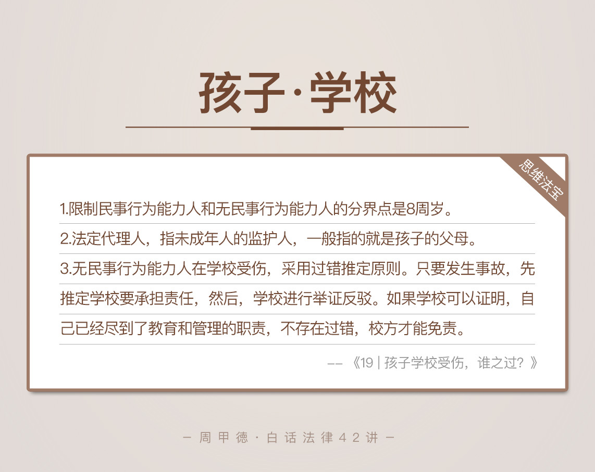

- 00 开篇词 这年头，你真应该懂点法律常识.md.html
- 01 “老周，我想知道” 常见法律认知盲区（一）.md.html
- 02 “老周，我想知道” 律师就在你身边（二）.md.html
- 03 “老周，我想知道” 律师就在你身边（三）.md.html
- 04 “老周，我想知道” 律师就在你身边（四）.md.html
- 05 创业未捷老板跑，社保工资哪里讨？.md.html
- 06 保密还是“卖身”，霸王条款怎么看？.md.html
- 07 编造流言蹭热度？看守所里降温度！.md.html
- 08 合同在手欠款难收，报警有用吗？.md.html
- 09 致创业：谁动了我的股权？.md.html
- 10 又见猝死！工“殇”究竟是不是工伤？.md.html
- 11 期权的“前世今生”.md.html
- 12 裁员面前，你能做的还有什么？.md.html
- 13 抄袭、盗图为什么做不得？.md.html
- 14 加班、工资、休假，你知道多少？.md.html
- 15 受贿原来这么“容易”.md.html
- 16 今天你用“VPN”了吗？.md.html
- 17 漏洞在眼前，可以悄悄破解吗？.md.html
- 18 “爬虫”真的合法吗？.md.html
- 19 非法集资到底是个啥？.md.html
- 20 黄色网站？不仅仅是“黄色”罪名.md.html
- 21 谁修改了我的积分资产？.md.html
- 22 外挂真能大吉大利吗？.md.html
- 23 如何看待“从删库到跑路”？.md.html
- 24 “伪基站”是你的避风港吗？.md.html
- 25 “网络诈骗”真的离你很远吗？.md.html
- 26 智斗中介：“北上广”租房图鉴.md.html
- 27 买买买！买房的“避坑”指南.md.html
- 28 闪婚又闪离，彩礼怎么理？.md.html
- 29 离婚还想和平？你要这么做.md.html
- 30 遗产继承的爱恨情仇.md.html
- 31 骗术升级？假结婚、假离婚的那些事儿.md.html
- 32 孩子学校受伤，谁之过？.md.html
- 33 如何让欠债还钱真正“天经地义”？.md.html
- 34 从透支到盗刷：人人须知的银行卡纠纷.md.html
- 35 远离“套路贷”的套路大全.md.html
- 36 危险！酒驾为什么被罚那么重？.md.html
- 37 老人倒地，“扶”“不服”？.md.html
- 38 “能动手就别吵吵”，代价你真的知道吗？.md.html
- 39 发生交通事故，如何处理？.md.html
- 40 交通事故综合法宝.md.html
- 41 婚姻家庭综合法宝.md.html
- 42 买卖房屋综合法宝.md.html
- 一键直达 法律专栏“食用”指南.md.html
- 加餐 “新冠肺炎”影响下，17个常见法律问题解答.md.html
- 结束语 法律，不会终止的篇章.md.html
- 捐赠
32 孩子学校受伤，谁之过？
像我这样的70后，从小长到大，可以说就是被打出来的。家里长辈推崇的是“棍棒底下出孝子”，学校老师也是信奉“严师出高徒”，怎么个“严”法儿呢？教鞭棍，打板子。上课不听讲、说小话、不做作业或者跟同学打架，都免不了一顿板子，调皮的我们也经常恶作剧，偷偷溜进办公室把老师的教鞭棍给扔了。
这就是我们那个时代，没人觉得这有什么不妥，也没人觉得这样违法，更没听说老师因此被罚的。可到了现在，时不时有幼儿园老师虐待孩子的事件被报道，尤其是去年的某颜色幼儿园事件，虽然始终迷雾重重，但引发的争议却是前所未有的激烈。
除了一些本身坏心眼的人，我想更多的争议，应该来自于老师和家长不同的教育理念。
而这类报道频出的原因，我想主要有四点：一是现在信息传播快、传播途径广；二是人们的法治意识明显增强；三是长期的独生子女政策，生活水平也提高了，父母爱孩子心切；四是孩子们的眼界也开阔了不少，对社会的认识大大提前。
言归正传，我们就来看看关于孩子在学校受伤，相关责任的承担情况。这个问题应该也是不少做父母的人，很关心的现实。比如说，前不久我家邻居的这么一场纠纷。
邻居家的孩子叫小五，今年5岁，在一所外国语学校上学。前两天一个课间时间，老师在教室门口接电话，顾不到小五自已爬上桌子玩儿，结果摔下来受了伤，不仅掉了颗牙，还磕破了嘴，缝了五针，花了5000多块钱。
五岁的小朋友，在学校自已爬桌子玩儿，受了伤，究竟应该由谁负责呢？
要弄清楚这一点，对于小朋友的特定法律身份，我们需要先来了解一下。
法律知识
成年人和未成年人
18周岁以上（含18周岁）的人是成年人，18周岁以下是未成年人。
我们的法律对未成年人有特别照顾，如《未成年人保护法》、《刑法》、《侵权责任法》等法律，都对未成年人给予了特殊的保护。
民事行为能力
民事行为能力，是指我们能以自己的行为参加民事活动，享受民事权利，承担民事义务的地位和资格。根据这一点，法律把我们分为完全民事行为能力人、限制民事行为能力人以及无民事行为能力人。
我们所说的，18周岁及以上的成年人，就是完全民事行为能力人。
8周岁以上（含8周岁）、不满18周岁的人，属于限制民事行为能力人。既然有限制，他做的事情和年龄、智力相适应，才在法律上生效。如果不适应，就需要其法定代理人的同意或追认才有效。
不满8周岁的人为无民事行为能力人，要由他的法定代理人代理做事，个人行为一般无效。
举个例子，一个9岁的小朋友，自己悄悄拿零花钱买了台iPhone，回家后被父母发现。随后，父母去找卖家退货退钱，那么从法律上来说，卖家应该退还。
因为9岁孩子属于限制民事行为能力人，花好几千买手机的行为，和他的年龄、智力显然不相符，并且他是没有经过父母同意悄悄买的，显然在法律上是无效的，卖家只能认。这也是为什么，我们总强调商家不要把贵重物品卖给未成年人。
再比如说，经常在电视上看到的，某某小学生给主播打赏了几万块，然后被父母痛揍、并且把钱要回来的新闻，也是同样的道理。
事实上，以前我们熟悉的，限制民事行为能力人和无民事行为能力人的分界点是10周岁，由《民法通则》规定。而《民法总则》出台后，这个分界点降低为8周岁。
这其实也是为了适应社会发展，毕竟，网络时代信息社会，孩子对社会的认知远远超过我们那会儿。早熟是把双刃剑，法律也会及时调整、不断发展，争取给孩子们最大程度的保护。
法定代理人和法定代表人
一字之差，差万里。代理和代表在法律上的意思相距甚远，可以说是完全不同的两个概念。
法定代理人，指未成年人的监护人，一般指的就是孩子的父母。
法定代表人，指代表公司行使职权的负责人，可以根据公司章程更换。
情景分析
现在我们再来看小五的问题。首先，从法律上来说，5岁的小五属于无民事行为能力人。
这里有一个重要的法规，你可以记下来。《侵权责任法》的第38条规定，在幼儿园、学校或者其他教育机构（以下统称为校方）学习、生活期间，如果无民事行为能力人受到伤害，校方应该承担责任；但是，如果校方能证明，自己已经尽到了教育和管理的职责，就不必承担责任了。
这里实际用的是过错推定原则，只要发生事故，先推定学校要承担责任，然后，学校进行举证反驳。如果学校提供的证据可以证明，自己已经尽到了相应的义务，不存在过错，校方才能免责。
结合这一点，我们知道，学校必须提供证据，证明自己尽到职责，也没有过错，才可以免责，不然就要承担责任。
然而，那么大点儿的孩子在外上学，一旦超出了监护人的控制范围，即使是受了伤，也说不清楚到底发生了什么，因此，让这样的孩子或者孩子的监护人来证明学校没过错，几乎不太可能。
所以，外国语学校应该为小五受伤负责，并进行赔偿。
了解了5岁孩子的情况，我们再换一个场景来分析。
如果小五今年已经12岁了，这事儿又该怎么看呢？
显然，如果小五是12岁，就属于限制民事行为能力人。
相对应的也有一条重要法规。《侵权责任法》的第39条规定，在学校或者其他教育机构（以下统称为校方）学习、生活期间，如果限制民事行为能力人受到伤害，而校方并没有尽到教育、管理职责，校方应该承担责任。
两条规定的差别显而易见。38条首先推定校方要负责，除非校方可以举证证明自己无错。而39条则规定，校方有过错的话，才需要承担责任。那么，如果学校已经给学生讲过安全问题，尽到了管理职责，学生受伤后，学校是不用担责的。
所以，如果是12岁的小五，在课间爬桌子摔伤，原则上，学校不需要承担责任。因为不能爬桌子上是一个最基本的常识，除非小五父母能证明学校有疏忽过错，学校才需要承担责任。
思维法宝
孩子问题永远是家长、社会关心的大话题。这里我也总结了一些，孩子在学校容易受到的伤害类型。希望你认真看完，在心里有个印象，把它作为教育孩子、提醒自己的一些警告。
学校的教学、生活设施设备不安全，或管理、维护不当，造成伤害；
学校提供的食品、药品、饮用水、教学用具或其他物品不合格，造成伤害；
老师体罚、变相体罚学生，或做出其他侮辱学生人格尊严的行为，造成伤害；
学生之间互相嬉戏、玩耍时，受到伤害；
学生在做实验或劳动时，受到伤害；
学生参加对抗性或其他有风险的体育或竞赛活动时，受到伤害；
学生参加学校组织的外出活动时，受到伤害；
校外人员在校内造成的伤害。
当然，除了这八大原因，还有可能是孩子自身问题受了伤，那主要就是我们教育的责任了。
那么，一旦发生这些情况，我们做家长的就应该明白下面这些道理。
首先，要判断孩子是无民事行为能力人还是限制民事行为能力人，然后根据前面讲到的归责原则，确定责任的归属和大小问题。
如果伤害来自于同学之间，还要考虑伤害是由哪一方造成的，双方的责任分别有多大，然后再看学校的责任，综合判断责任的承担比例问题。
如果伤害来自于在校内的外来人员，那么责任主要有外来人员承担，然后再看学校的过错程度，由学校来承担补充责任。
- 其实，可怜天下父母心，我也有孩子，自然也能理解大多数家长对孩子的宠爱和担忧。但是，从法律角度，我必须得说的是，我们做家长的也应该理性看待孩子在学校意外受伤的问题。恶意的伤害谁都不能忍，但是意外事故，我们就要对责任的承担有一定的了解。
比如说，自家孩子动手打了其他同学，就不应该再一昧护短，而是应该在学校的主持下，积极道歉和赔偿，这也是对孩子的言传身教。
另外，我个人认为，做家长的也应该适当容忍老师的批评教育。一昧的赞美和肯定，也不会是好的教育。毕竟，犯错也是人生的常态，没人纠正，任其发展下去，才真的可怕。
我们希望老师能够用心教孩子，那么对教育手段也应该有一定容忍度，只要不是恶意的、过分的惩罚，其实是可以理解的。
当然，开头提到的那类恶意虐待事件，是绝对不能原谅的，必须加大打击的力度。其实，我一直都呼吁，增设“虐待未成年人罪”，但凡是教育机构中有教育职责的人，如果有恶意虐待未成年人的行为，都应该追究刑事责任，处三年以下有期徒刑。
今天的内容主要就是这些。我想，对于孩子问题，你应该会有比较深的体会。在你小时候，有发生过类似的学校事故吗？又是怎样解决的呢？或者，你家孩子有过类似经历吗？做家长的你又是怎么处理的呢？
欢迎留言和我分享，也欢迎你把这篇文章发给你的家人、朋友或朋友圈。孩子是每个家庭的未来，多一份了解，多一份爱。
© 2019 - 2023 Liangliang Lee. Powered by gin and hexo-theme-book.